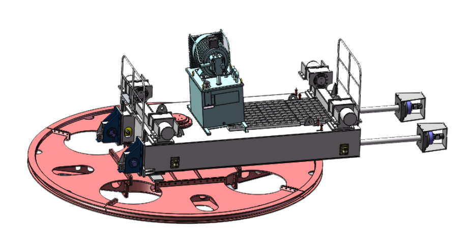

<div class="content">
    <div class="content-left">
        
        <p>液压张紧站示意图</p>
        <div class="pressure-data-title">张紧压力</div>
        <!--        false0 = 绿色0-->
        <div class="pressure-data">
            <div
                    class="data-item"
                    [ngClass]="{'data-item-normal': dataSource['张紧压力-10%状态']?.value==false, 'data-item-abnormal': dataSource['张紧压力-10%状态']?.value==true}"
            >-10%</div>
            <div
                    class="data-item"
                    [ngClass]="{'data-item-normal': dataSource['张紧压力-5%状态']?.value==false, 'data-item-abnormal': dataSource['张紧压力-5%状态']?.value==true}"
            >-5%</div>
            <div class="data-item">调节范围</div>
            <div
                    class="data-item"
                    [ngClass]="{'data-item-normal': dataSource['张紧压力+5%状态']?.value==false, 'data-item-abnormal': dataSource['张紧压力+5%状态']?.value==true}"
            >+5%</div>
            <div
                    class="data-item"
                    [ngClass]="{'data-item-normal': dataSource['张紧压力+10%状态']?.value==false, 'data-item-abnormal': dataSource['张紧压力+10%状态']?.value==true}"
            >+10%</div>
        </div>
        <div class="pressure-data">
            <div class="data-item">{{dataSource['张紧压力-10%采集值']?.value}}</div>
            <div class="data-item">{{dataSource['张紧压力-5%采集值']?.value}}</div>
            <div class="data-item"></div>
            <div class="data-item">{{dataSource['张紧压力+5%采集值']?.value}}</div>
            <div class="data-item">{{dataSource['张紧压力+10%采集值']?.value}}</div>
        </div>
        <div class="reset-button">
            <!--            2dt 1黄0蓝   复位1蓝0黄-->
<!--            <div [ngClass]="{'button-green':dataSource['复位']?.value==true}"><button nz-button nzType="primary" nzShape="round" (mousedown)="resetDown()" (mouseup)="resetUp()">复位</button></div>-->
<!--            <div [ngClass]="{'button-green':dataSource['2DT闭锁']?.value==false}"><button nz-button nzType="primary" nzShape="round" (mousedown)="DTDown()" (mouseup)="DTUp()">2DT闭锁</button></div>-->
            <div [ngClass]="{'button-green':dataSource['复位']?.value==true}">
                <button
                        nz-button
                        nzType="primary"
                        nzShape="round"
                        id="reset_up"
                        (mousedown)="switchFunc(dataSource['复位']?.key, dataSource['复位']?.value, '复位')"
                        (mouseup)="switchFunc(dataSource['复位']?.key, dataSource['复位']?.value, '复位')"
                        (touchstart)="switchFunc(dataSource['复位']?.key, dataSource['复位']?.value, '复位')"
                        (touchend)="switchFunc(dataSource['复位']?.key, dataSource['复位']?.value, '复位')"
                >复位</button>
            </div>
            <div [ngClass]="{'button-green':dataSource['2DT闭锁']?.value==false}">
                <button
                        nz-button
                        nzType="primary"
                        nzShape="round"
                        (mousedown)="switchFunc(dataSource['2DT闭锁']?.key, dataSource['2DT闭锁']?.value, '2DT闭锁')"
                        (mouseup)="switchFunc(dataSource['2DT闭锁']?.key, dataSource['2DT闭锁']?.value, '2DT闭锁')"
                        (touchstart)="switchFunc(dataSource['2DT闭锁']?.key, dataSource['2DT闭锁']?.value, '2DT闭锁')"
                        (touchend)="switchFunc(dataSource['2DT闭锁']?.key, dataSource['2DT闭锁']?.value, '2DT闭锁')"
                >2DT闭锁</button>
            </div>
        </div>
    </div>
    <div class="content-right">
        <div class="pressure">
            <div class="pressure-top">
                <div class="pressure-title">压力1</div>
                <div class="shield">
                    <div class="shield-title">屏蔽传感器1</div>
                    <!--                    1屏蔽红（绿） 0灰 保持-->
                    <nz-switch
                            [ngModel]="dataSource['屏蔽传感器1']?.value==true"
                            nzCheckedChildren="1"
                            nzUnCheckedChildren="0"
                            (click)="switchFunc(dataSource['屏蔽传感器1']?.key, dataSource['屏蔽传感器1']?.value, '屏蔽传感器1')"
                    ></nz-switch>
                </div>
            </div>
            <div class="pressure-display-border">
                <div class="pressure-display">
                    <div class="display-word">压力显示</div>
                    <div class="pressure-right">
                        <!--                        0绿 1红 此处点表未标注-->
                        <div class="display-number"  [ngClass]="{'number-green': dataSource['屏蔽传感器1状态']?.value==false, 'number-red': dataSource['屏蔽传感器1状态']?.value==true}">{{dataSource['压力1采集值']?.value}}</div>
                        <div class="display-word">Mpa</div>
                    </div>
                </div>
            </div>
            <div class=pressure-show>
                <div class="pressure-show-item">
                    <!--                    <div class="dot" [ngClass]="{'dot-green': data ? !data['屏蔽传感器1']?.value, 'dot-red': data ? data['屏蔽传感器1']?.value}"></div>-->
                    <span>额定压力</span>
                    <div class="show-value">{{dataSource['张紧额定压力']?.value}}</div>
                    <span>Mpa</span>
                </div>
                <div class="pressure-show-item">
                    <span>百分数</span>
                    <div class="show-value">{{dataSource['张紧百分比1']?.value}}</div>
                    <span>%</span>
                </div>
            </div>
        </div>
        <div class="pressure">
            <div class="pressure-top">
                <div class="pressure-title">压力2</div>
                <div class="shield">
                    <div class="shield-title">屏蔽传感器2</div>
                    <nz-switch
                            [ngModel]="dataSource['屏蔽传感器2']?.value==true"
                            nzCheckedChildren="1"
                            nzUnCheckedChildren="0"
                            (click)="switchFunc(dataSource['屏蔽传感器2']?.key, dataSource['屏蔽传感器2']?.value, '屏蔽传感器2')"
                    ></nz-switch>
                </div>
            </div>
            <div class="pressure-display-border">
                <div class="pressure-display">
                    <div class="display-word">压力显示</div>
                    <div class="pressure-right">
                        <!--                        <div class="display-number" [ngStyle]="{'color':data ? !data['屏蔽传感器2']?.value ? '#6ABE04' : '#FF3636'}">{{data ? data['压力2采集值']?.value}}</div>-->
                        <div class="display-number"  [ngClass]="{'number-green': dataSource['屏蔽传感器2状态']?.value==false, 'number-red': dataSource['屏蔽传感器2状态']?.value==true}">{{dataSource['压力2采集值']?.value}}</div>
                        <div class="display-word">Mpa</div>
                    </div>
                </div>
            </div>
            <div class=pressure-show>
                <div class="pressure-show-item">
                    <!--                    <div class="dot" [ngClass]="{'dot-green': data ? !data['屏蔽传感器2']?.value, 'dot-red': data ? data['屏蔽传感器2']?.value}"></div>-->
                    <span>额定压力</span>
                    <div class="show-value">{{dataSource['张紧额定压力']?.value}}</div>
                    <span>Mpa</span>
                </div>
                <div class="pressure-show-item">
                    <span>百分数</span>
                    <div class="show-value">{{dataSource['张紧百分比2']?.value}}</div>
                    <span>%</span>
                </div>
            </div>
        </div>
        <div class="pressure" style="height: 245px">
            <div class="pressure-top">
                <div class="pressure-title">状态</div>
            </div>
            <div class="state-item">
                <!--               0绿1红 此处有问题-->
                <div class="dot" [ngClass]="{'dot-green': dataSource['张紧压力正常信号']?.value==false, 'dot-red': dataSource['张紧压力正常信号']?.value==true}"></div>
                <span>张紧压力正常</span>
            </div>
            <div class="state-item">
                <div class="dot" [ngClass]="{'dot-green': dataSource['传感器异常信号']?.value==false, 'dot-red': dataSource['传感器异常信号']?.value==true}"></div>
                <span>传感器异常 | 传感器差值：</span>
                <input nz-input [value]="dataSource['传感器差值']?.value">
            </div>
            <div class="state-item">
                <div class="dot" [ngClass]="{'dot-green': dataSource['张紧小车超限']?.value==false, 'dot-red': dataSource['张紧小车超限']?.value==true}"></div>
                <span>张紧小车超限</span>
            </div>
        </div>
        <div class="pressure" style="height: 210px">
            <div class="pressure-top">
                <div class="pressure-title">开关</div>
            </div>
            <!--            false0 = 红色0 绿1-->
            <div class="switch-group">
                <div class="switch-item"
                     style="background: url('../../../../assets/images/circuitous-tension/switch_icon1.png') center no-repeat;">
                    <div class="dot" [ngClass]="{'dot-green': dataSource['电机状态']?.value==true, 'dot-red': dataSource['电机状态']?.value==false}"></div>
                    <span>电机</span>
                </div>
                <div class="switch-item"
                     style="background: url('../../../../assets/images/circuitous-tension/switch_icon2.png') center no-repeat;">
                    <div class="dot" [ngClass]="{'dot-green': dataSource['风机状态']?.value==true, 'dot-red': dataSource['电机状态']?.value==false}"></div>
                    <span>风机</span>
                </div>
            </div>
            <div class="switch-group">
                <div class="switch-item"
                     style="background: url('../../../../assets/images/circuitous-tension/switch_icon3.png') center no-repeat;">
                    <div class="dot" [ngClass]="{'dot-green': dataSource['泄压电磁阀状态']?.value==true, 'dot-red': dataSource['泄压电磁阀状态']?.value==false}"></div>
                    <span>泄压电磁阀</span>
                </div>
                <div class="switch-item"
                     style="background: url('../../../../assets/images/circuitous-tension/switch_icon4.png') center no-repeat;">
                    <div class="dot" [ngClass]="{'dot-green': dataSource['保护电磁阀状态']?.value==true, 'dot-red': dataSource['保护电磁阀状态']?.value==false}"></div>
                    <span>保护电磁阀</span>
                </div>
            </div>
        </div>
    </div>
</div>
